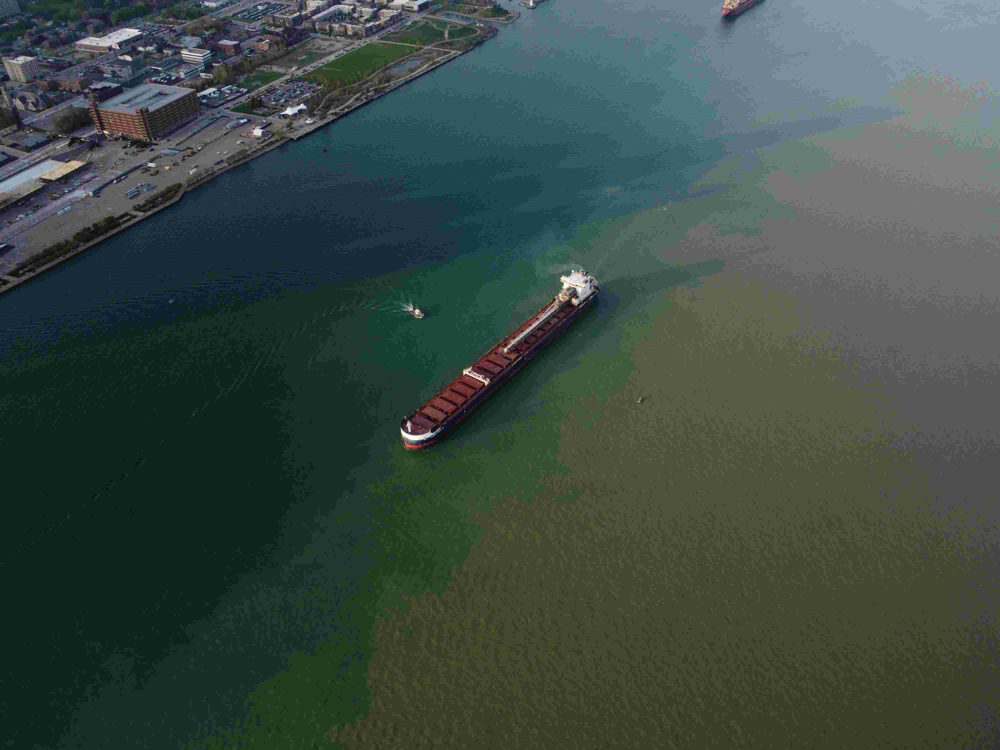
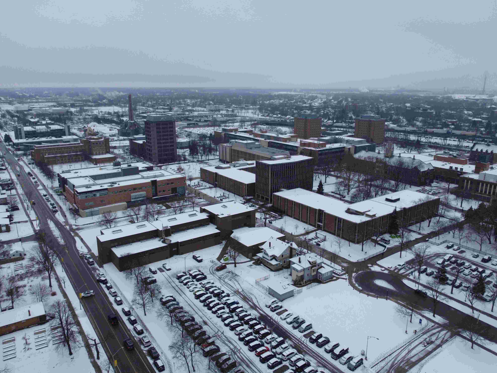
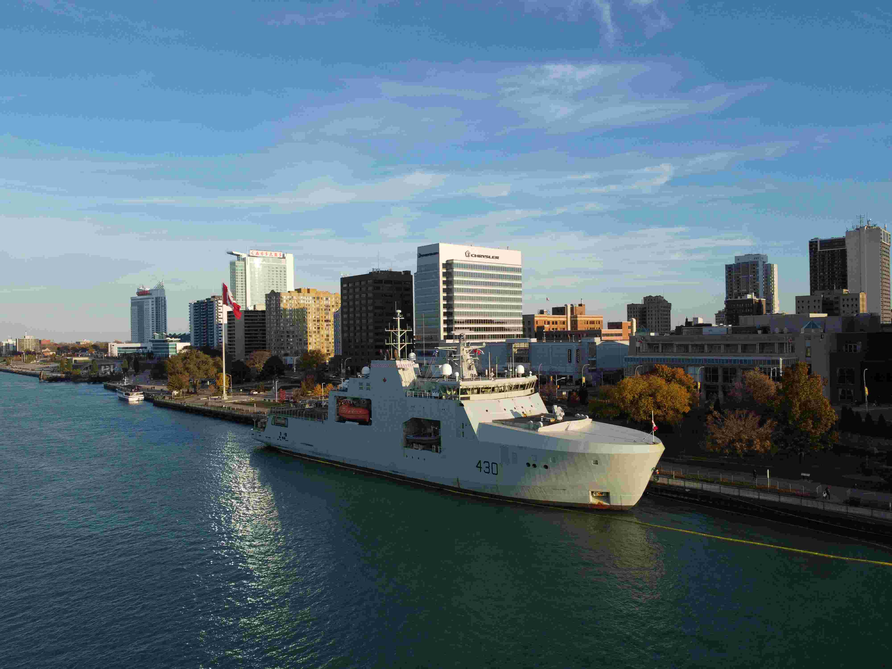

Some of my Mini 2 content



The DJI Mini 2 takes great photos with its 12mp camera especially in the day time. Its ability to stabilize during windy conditions allows me to fly at the maximum altitude permitted by law and still capture stable photos.
I selected a photo of a ship that was crossing the Detriot river,
the university campus on a snowy day and a warship that visited Windsor. As you may notice the photos have different angles from which they were taken.
This was possible because the camera is attached to a gimbal that can be moved up and down according to the user. The drone also offers a manual camera mode,
enabling control over ISO, white balance, and other settings. so that you can get the exact look you want. During foggy
situations however the camera lens can get covered with moiture so image quality is affected which is expected.
Email me at: chowdh52@uwindsor.ca
Back to Top of Page
Adib Md Alim Chowdhury
chowdh52@uwindsor.ca